手机端与 iPad / Mac 端**分开设计**：手机目标是把横竖屏都排下，宽屏目标是用宽度换信息密度。 每一张都按设备真实尺寸（pt）绘制，2× 导出。
可交互版本：phone.html（手机端） · wide.html（iPad / Mac）
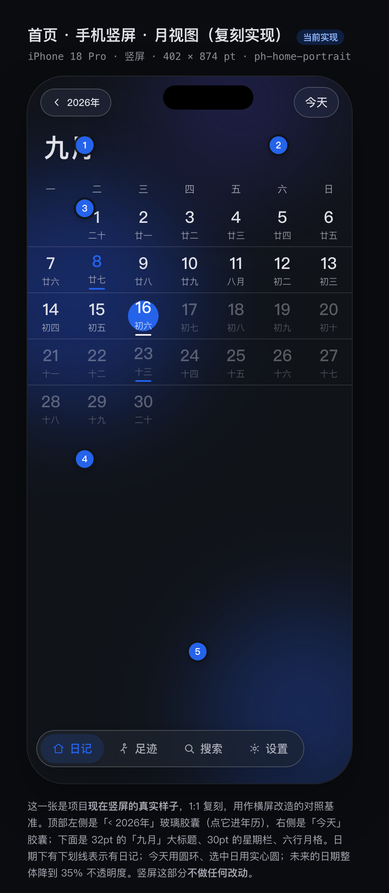
这一张是项目现在竖屏的真实样子，1:1 复刻，用作横屏改造的对照基准。顶部左侧是「‹ 2026年」玻璃胶囊（点它进年历），右侧是「今天」胶囊；下面是 32pt 的「九月」大标题、30pt 的星期栏、六行月格。日期下有下划线表示有日记；今天用圆环、选中日用实心圆；未来的日期整体降到 35% 不透明度。竖屏这部分不做任何改动。
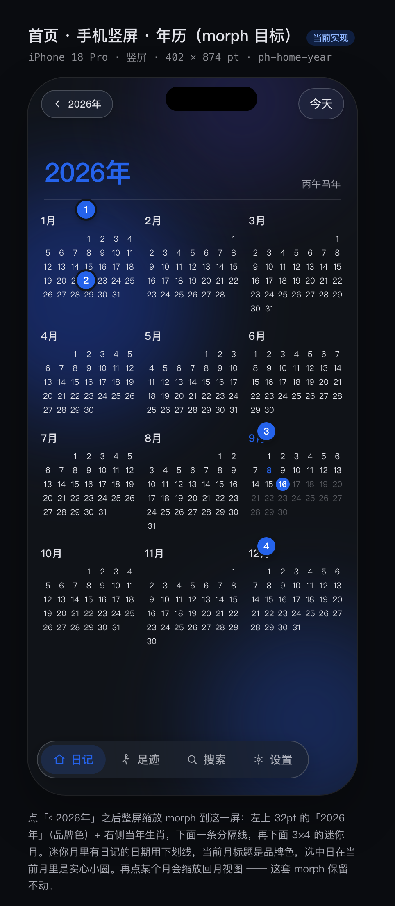
点「‹ 2026年」之后整屏缩放 morph 到这一屏：左上 32pt 的「2026年」（品牌色）+ 右侧当年生肖，下面一条分隔线，再下面 3×4 的迷你月。迷你月里有日记的日期用下划线，当前月标题是品牌色，选中日在当前月里是实心小圆。再点某个月会缩放回月视图 —— 这套 morph 保留不动。
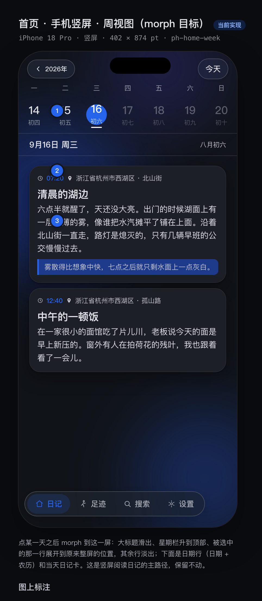
点某一天之后 morph 到这一屏：大标题滑出、星期栏升到顶部、被选中的那一行展开到原来整屏的位置，其余行淡出；下面是日期行（日期 + 农历）和当天日记卡。这是竖屏阅读日记的主路径，保留不动。
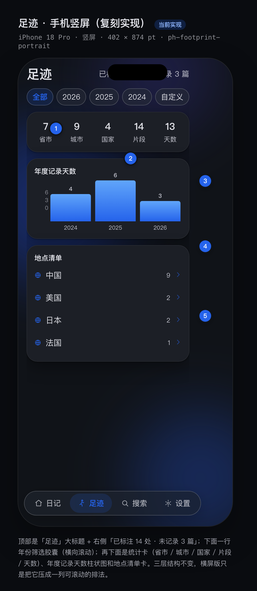
顶部是「足迹」大标题 + 右侧「已标注 14 处 · 未记录 3 篇」；下面一行年份筛选胶囊（横向滚动）；再下面是统计卡（省市 / 城市 / 国家 / 片段 / 天数）、年度记录天数柱状图和地点清单卡。三层结构不变，横屏版只是把它压成一列可滚动的排法。
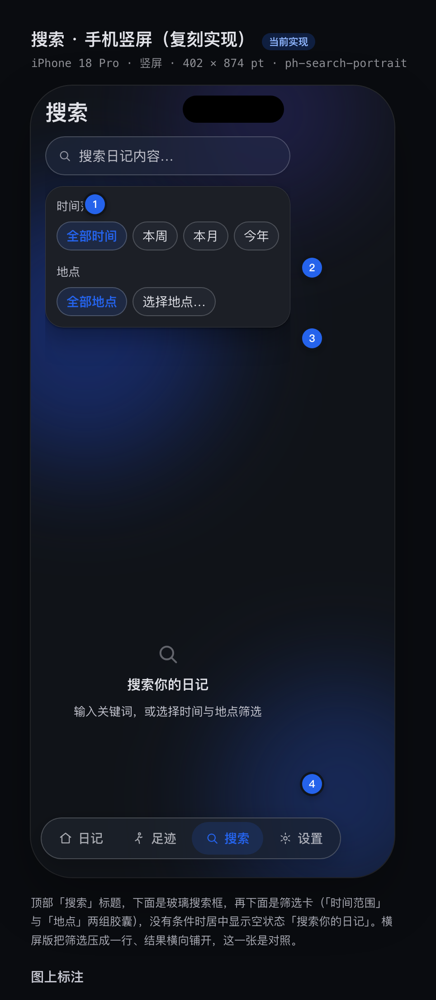
顶部「搜索」标题，下面是玻璃搜索框，再下面是筛选卡（「时间范围」与「地点」两组胶囊），没有条件时居中显示空状态「搜索你的日记」。横屏版把筛选压成一行、结果横向铺开，这一张是对照。
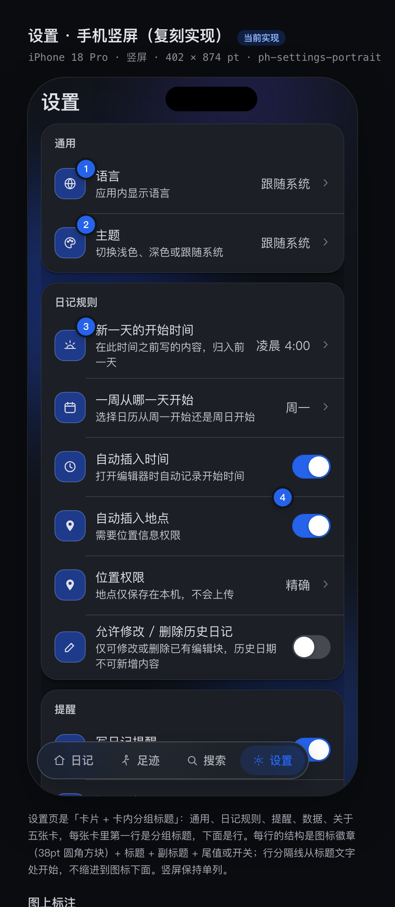
设置页是「卡片 + 卡内分组标题」：通用、日记规则、提醒、数据、关于五张卡，每张卡里第一行是分组标题，下面是行。每行的结构是图标徽章（38pt 圆角方块）+ 标题 + 副标题 + 尾值或开关；行分隔线从标题文字处开始，不缩进到图标下面。竖屏保持单列。
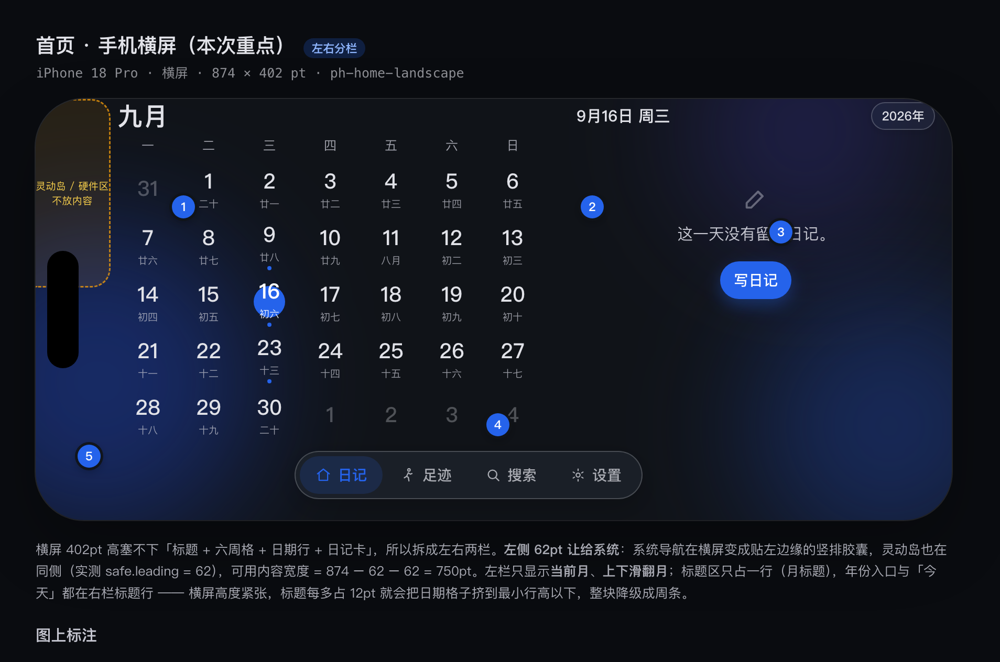
横屏 402pt 高塞不下「标题 + 六周格 + 日期行 + 日记卡」，所以拆成左右两栏：左栏月历（唯一翻月方式是上下滑，横屏不提供年份切换，以免与竖屏的年历 morph 交互打架），右栏是选中日的日记。系统导航在横屏仍在屏幕底部居中（真机实测：bar 高 64pt、四个按钮 x 290–583），所以左右边距和竖屏一样是 20pt，只有底部要给浮条留出 64pt。灵动岛在横屏是竖转贴左边缘的小条（37 宽 × 132 高、垂直居中），落在 x 0–37 内，20pt 边距 + 首列位置自然避开。
当可用高度放不下六周格（分屏、键盘弹起、Duo 折一半），左栏自动从「月」降级为「周条」：一行 7 天、横向翻周，右栏仍是选中日。这样内容永远不会被压扁，日期也永远可点。降级只影响密度，不改变左右分栏结构。
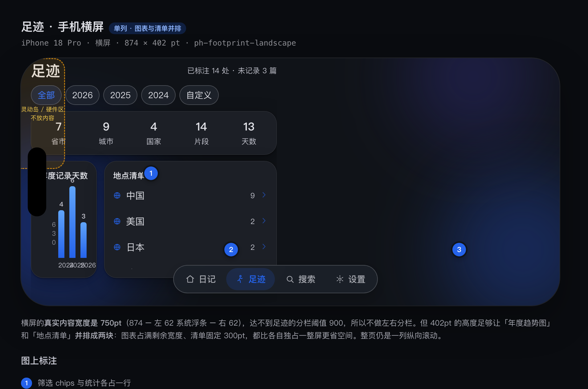
横屏改成左右两栏：左栏是筛选 + 统计 + 年度趋势图（占满剩余高度，图表能长到 190pt），右栏是地点清单。两栏各自纵向滚动——左栏看趋势、右栏查地点，互不牵动。之前我按「单列滚动」做是保守了：402pt 高确实放得下两栏，只要把统计卡压到一行、图表吸收剩余高度就行。
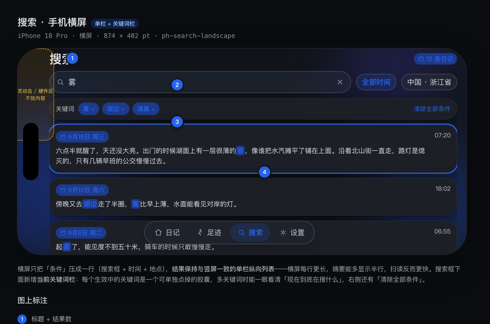
横屏只把「条件」压成一行（搜索框 + 时间 + 地点），结果保持与竖屏一致的单栏纵向列表——横屏每行更长，摘要能多显示半行，扫读反而更快。搜索框下面新增当前关键词栏：每个生效中的关键词是一个可单独点掉的胶囊，多关键词时能一眼看清「现在到底在搜什么」，右侧还有「清除全部条件」。
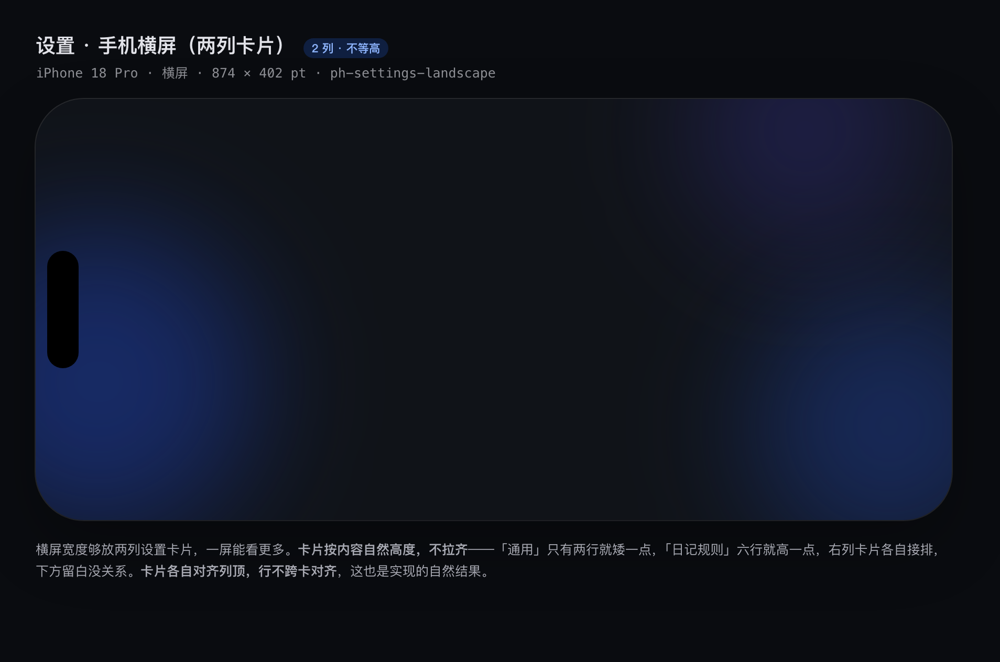
横屏宽度够放两列设置卡片，一屏能看更多。卡片按内容自然高度，不拉齐——「通用」只有两行就矮一点，「日记规则」六行就高一点，右列卡片各自接排，下方留白没关系。卡片各自对齐列顶，行不跨卡对齐，这也是实现的自然结果。
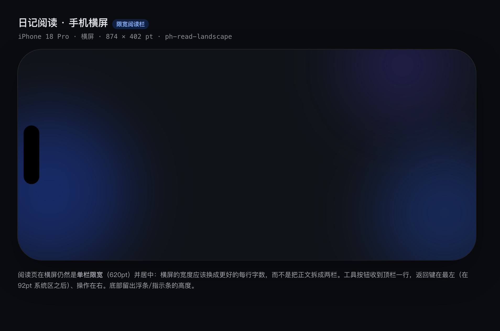
阅读页在横屏仍然是单栏限宽（620pt）并居中：横屏的宽度应该换成更好的每行字数，而不是把正文拆成两栏。工具按钮收到顶栏一行，返回键在最左（在 92pt 系统区之后）、操作在右。底部留出浮条/指示条的高度。
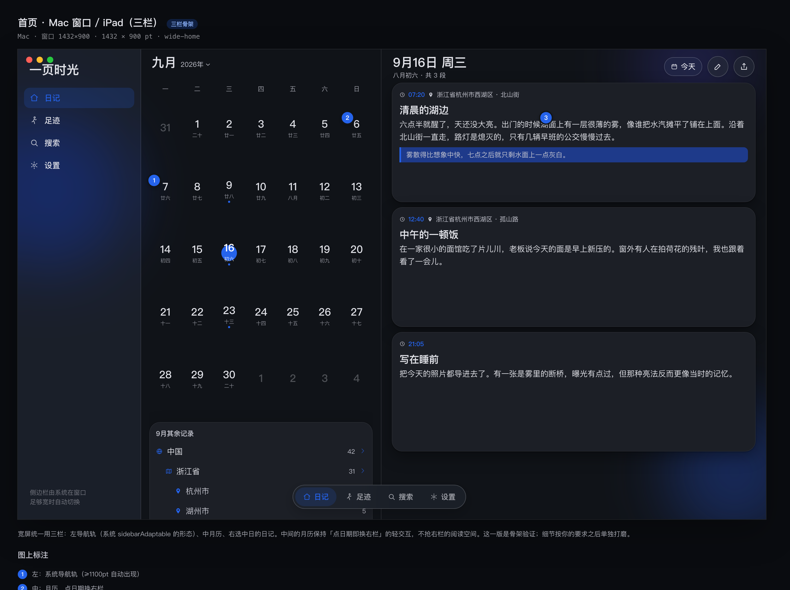
宽屏统一用三栏：左导航轨（系统 sidebarAdaptable 的形态）、中月历、右选中日的日记。中间的月历保持「点日期即换右栏」的轻交互，不抢右栏的阅读空间。这一版是骨架验证；细节按你的要求之后单独打磨。
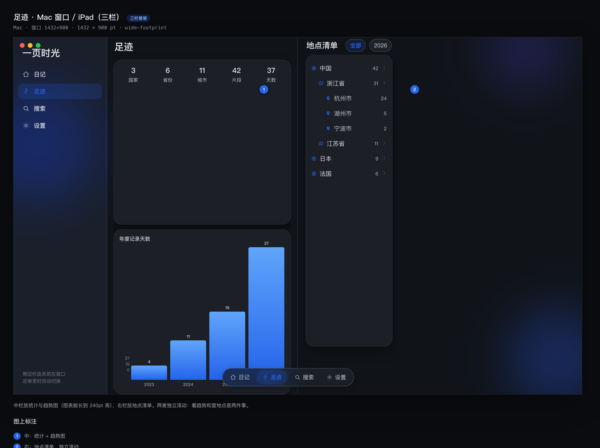
中栏放统计与趋势图（图表能长到 240pt 高），右栏放地点清单。两者独立滚动：看趋势和查地点是两件事。
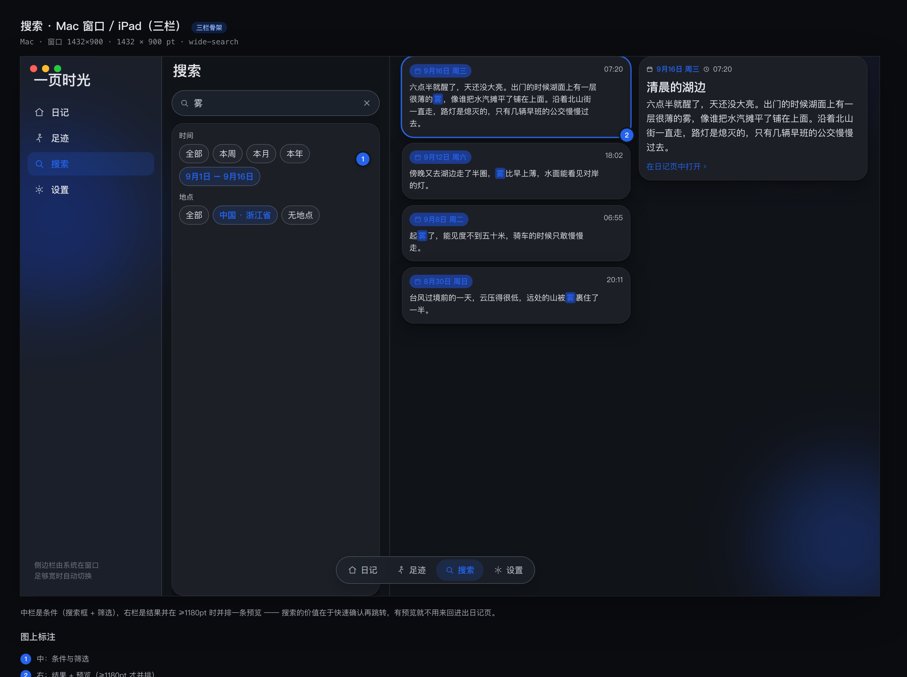
中栏是条件（搜索框 + 筛选），右栏是结果并在 ≥1180pt 时并排一条预览 —— 搜索的价值在于快速确认再跳转，有预览就不用来回进出日记页。
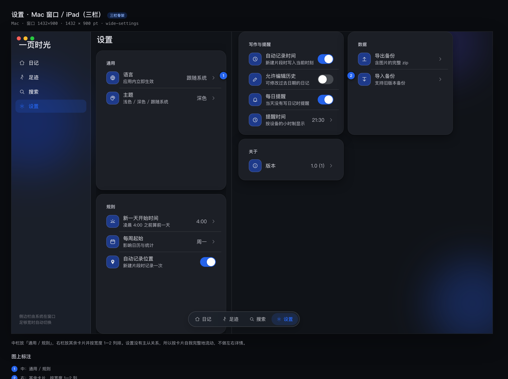
中栏放「通用 / 规则」，右栏放其余卡片并按宽度 1–2 列排。设置没有主从关系，所以按卡片自我完整地流动，不做左右详情。
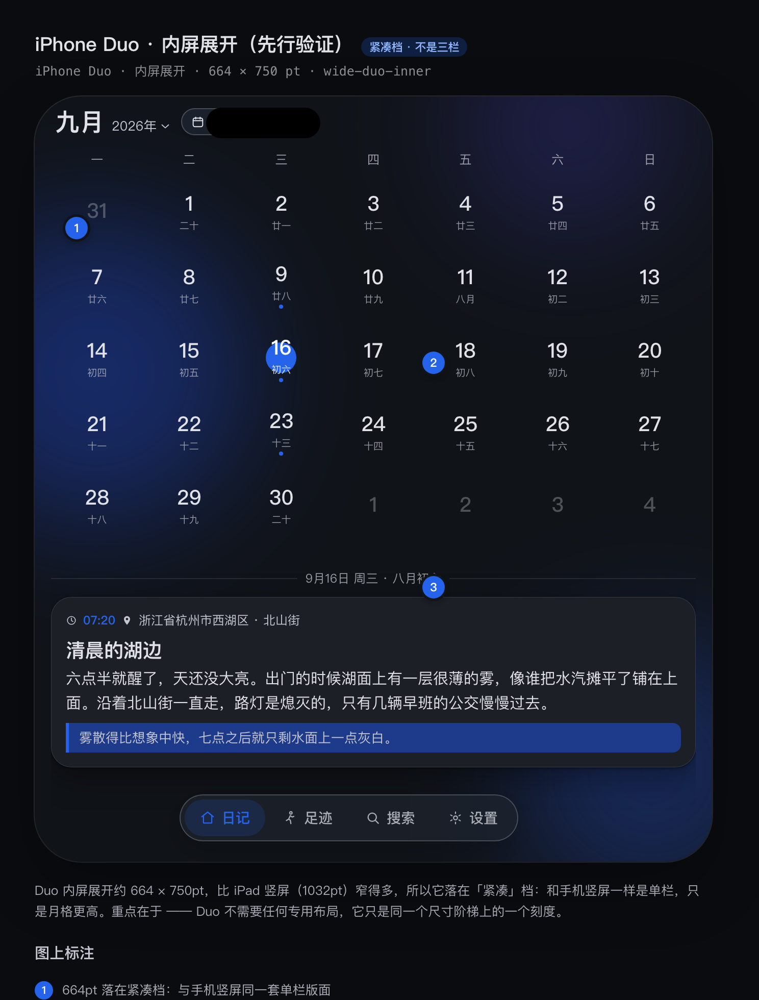
Duo 内屏展开约 664 × 750pt，比 iPad 竖屏（1032pt）窄得多，所以它落在「紧凑」档：和手机竖屏一样是单栏，只是月格更高。重点在于 —— Duo 不需要任何专用布局，它只是同一个尺寸阶梯上的一个刻度。